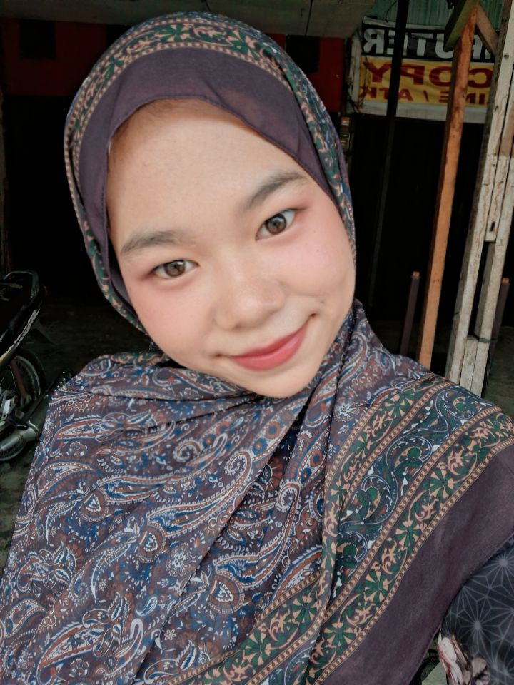
Meisrik Wahyuni
ilkomp25

ilkomp25
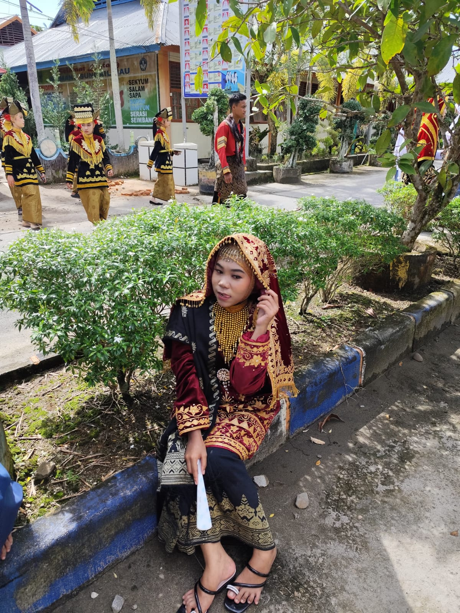
Hallo saya meisrik wahyuni biasa dipanggil mei. saya adalah mahasiswa ilmu komputer universitas sumatera utara. Saya tertarik pada bidang komunikasi, editing dan kerajinan tangan, dan saya juga menyukai jurusan saya tentunya. saya senang mempelajari hal-hal baru dan mengembangkan kemampuan di bidang pemrograman serta hal-hal diluar jurusan saya. melalui berbagai proyek dan pengalaman selama perkuliahan, saya terus berusaha meningkatkan kemampuan dan menghasilkan karya yang bermanfaat.
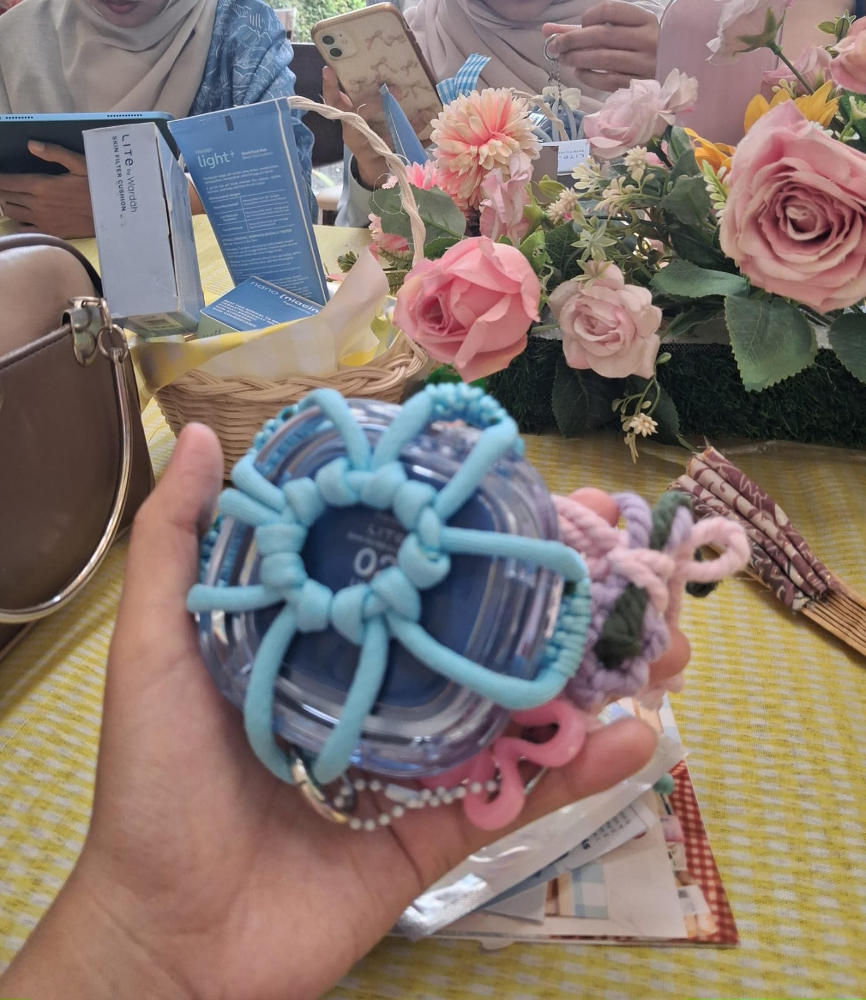
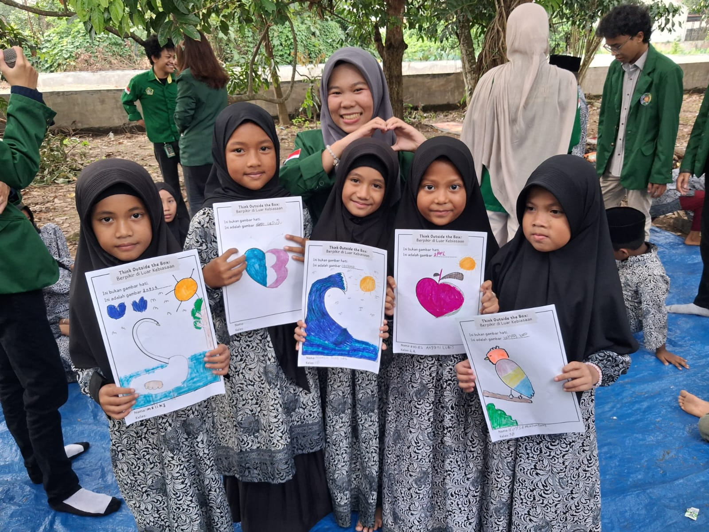
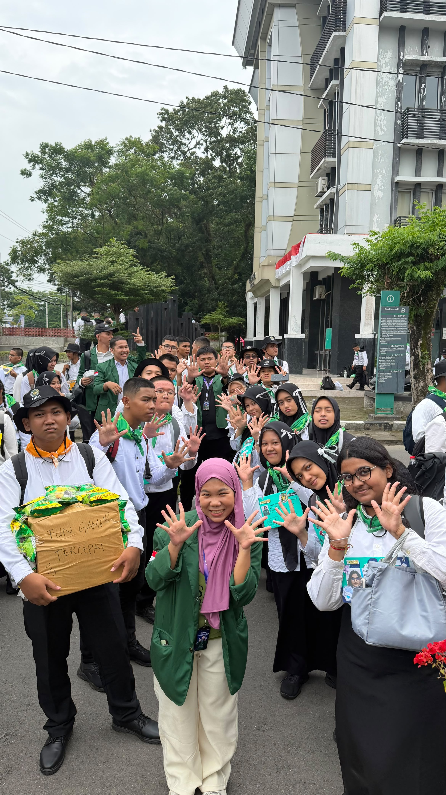
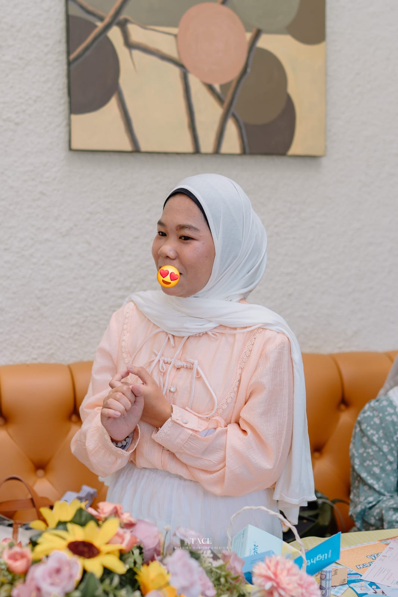
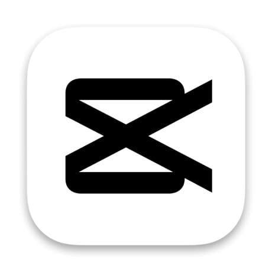
Membuat dan mengedit video menggunakan CapCut untuk kebutuhan konten dan dokumentasi.
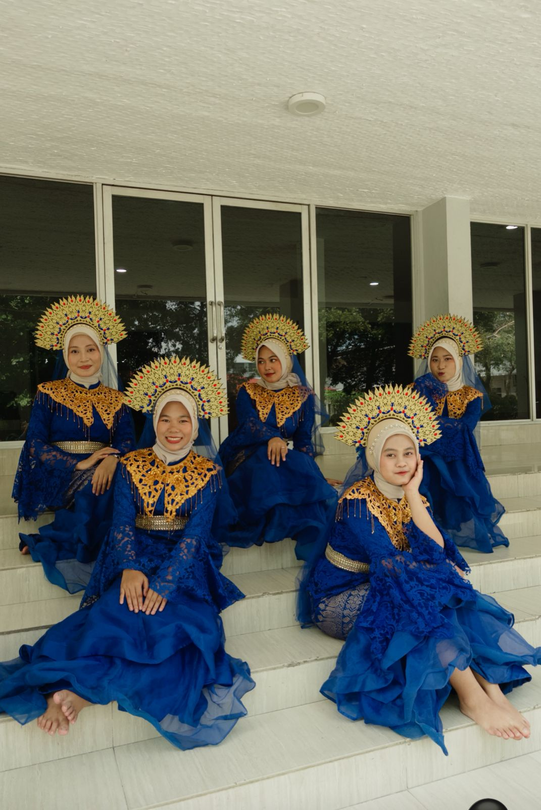
Memiliki pengalaman dalam kegiatan seni tari serta mampu mengikuti dan menghafal berbagai gerakan tari.
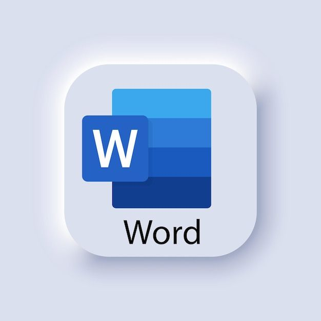
Membuat, mengedit, dan mengatur dokumen dengan format yang rapi dan terstruktur.
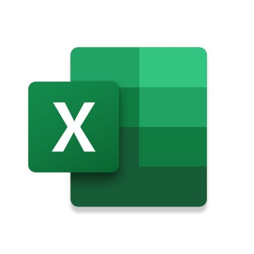
Membuat spreadsheet, mengelola data dan menyusun template sederhana untuk berbagai kebutuhan.
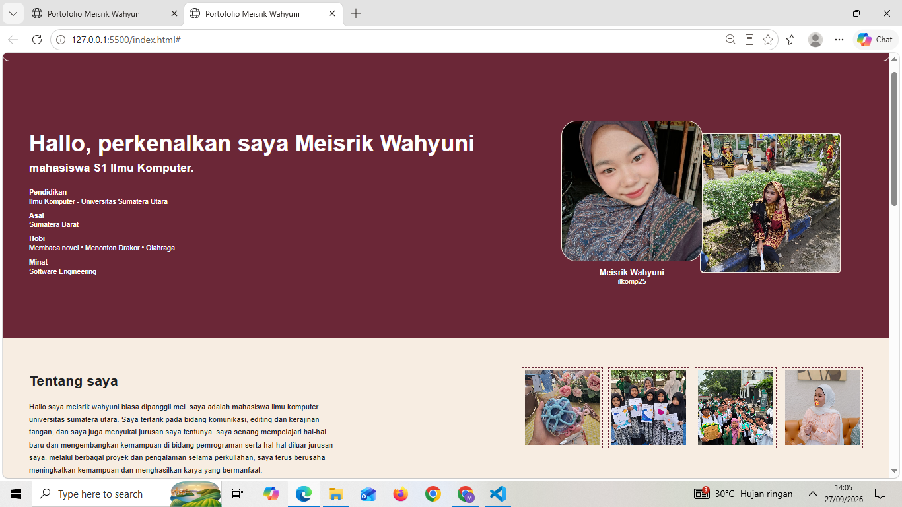
Website portofolio pribadi yang dibuat menggunakan HTML dan CSS.
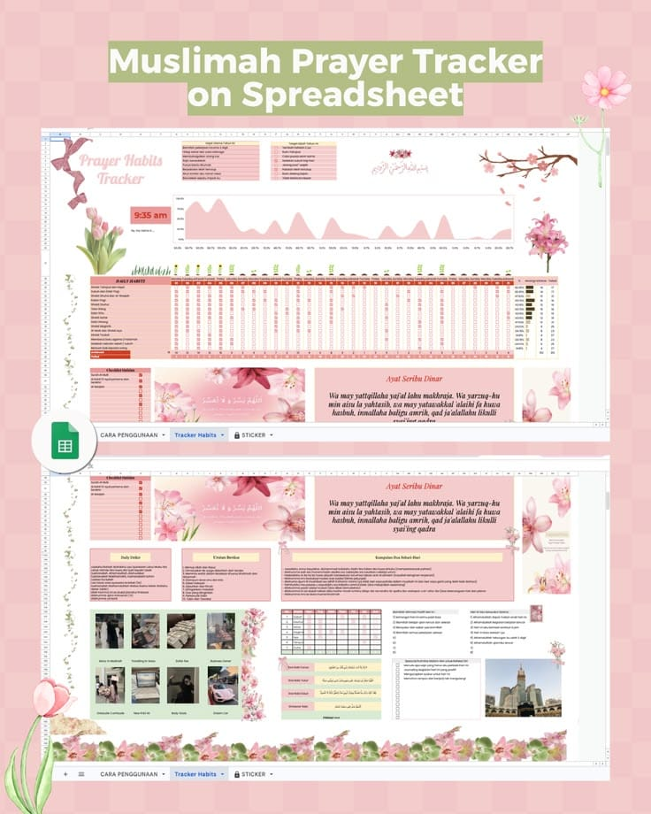
Membuat spreadsheet untuk membantu pencatatan ibadah dengan tampilan yang rapi.
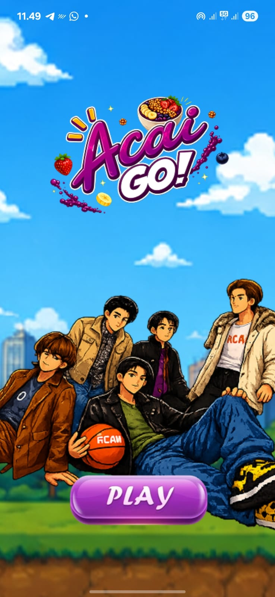
Aplikasi yang dikembangkan sebagai proyek kelompok selama perkuliahan.
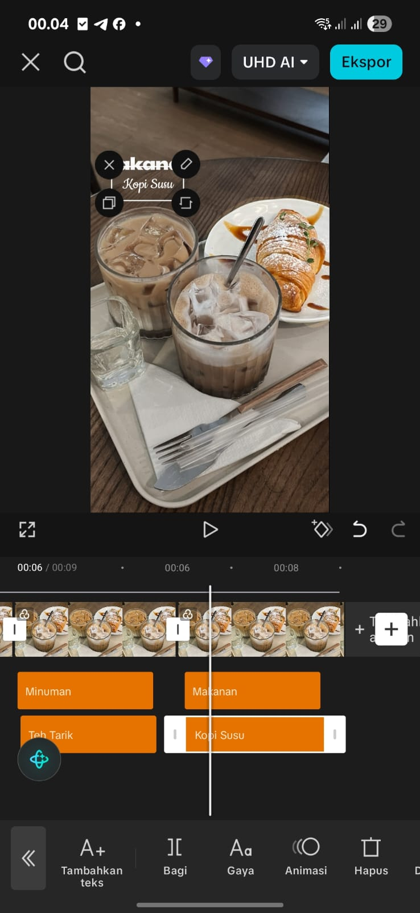
Hasil editing video menggunakan CapCut untuk kebutuhan konten dan dokumentasi.
Jika ingin menghubungi saya, berdiskusi, atau berkolaborasi, silakan melalui kontak berikut.
Terima kasih sudah mengunjungi portofolio saya! ♡